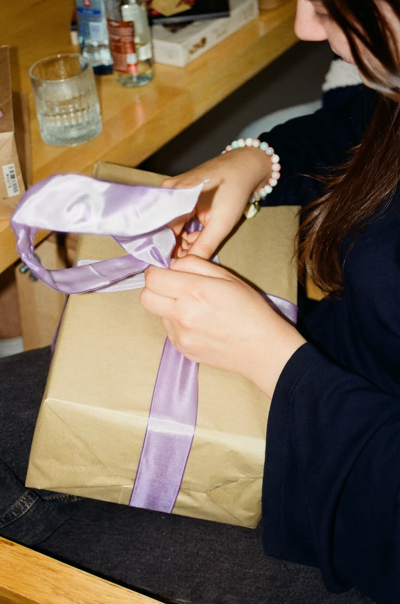
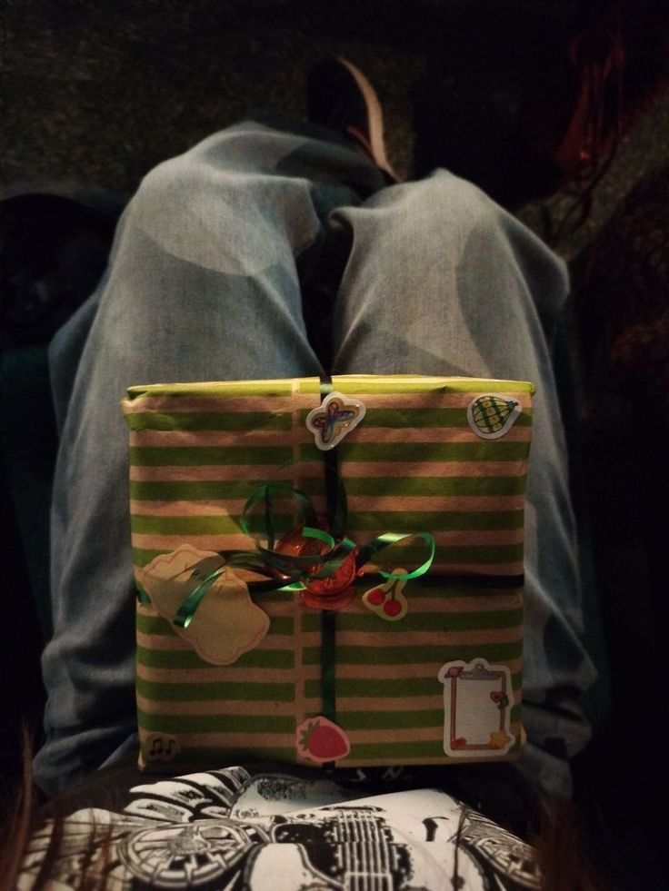

선물을 고르는 사람을 위한
선물 인사이트
관계와 나이, 기념일에 따라 달라지는 선물의 기준을 정리했어요.

20대 친구 생일 선물,
많이 주는 것과 받고 싶은 것
예쁜 디퓨저보다 매일 쓰는 핸드크림이 더 반가운 이유를 살펴봐요.
주는 사람의 기준과 받는 사람의 기준
선물을 고를 때는 특별해 보이는 물건에 먼저 눈길이 가요. 하지만 받는 사람에게는 평소 자주 쓰는 물건이나 취향에 맞는 작은 선물이 더 반가울 수 있어요.
20대 친구에게는 어떤 선물이 좋을까요?
친구가 자주 쓰는 향, 좋아하는 간식, 관심을 보였던 취미를 떠올려 보세요. 핸드크림이나 디저트처럼 부담이 적은 선물도 취향을 잘 반영하면 충분히 의미 있어요.
무엇을 살지 고민되면 “이 친구가 다음 주에도 사용할까?”를 먼저 생각해 보세요.
이 글은 선물 선택을 돕기 위한 가이드이며, 실제 설문 통계를 인용한 결과는 아니에요.
나에게 맞는 선물 추천받기관계가 달라지면 선물의 기준도 달라져요
가까운 정도와 관계에 따라 부담스럽지 않은 선물의 선이 달라져요.

나이대별로 달라지는
좋은 선물의 의미
마음을 전하는 날을 위한 선물
상황을 고르면 상품 탐색으로 이동해요.
실패를 줄이는
선물 고르기
-
받는 사람의 일상을 먼저 떠올리세요.
이미 자주 쓰는 물건과 자연스럽게 이어지는 선물은 실패할 가능성이 낮아요.
-
취향이 강한 선물은 작은 용량으로 시작하세요.
향수나 화장품은 미니 사이즈가 부담 없이 취향을 발견하기 좋아요.
-
많이 받는 선물인지 확인하세요.
머그컵, 대용량 디퓨저처럼 이미 여러 개 있을 수 있는 물건은 한 번 더 생각해 보세요.
-
교환이 편한지도 확인하세요.
받는 사람이 옵션을 바꾸기 쉬운 판매처인지 보면 선물의 부담을 줄일 수 있어요.